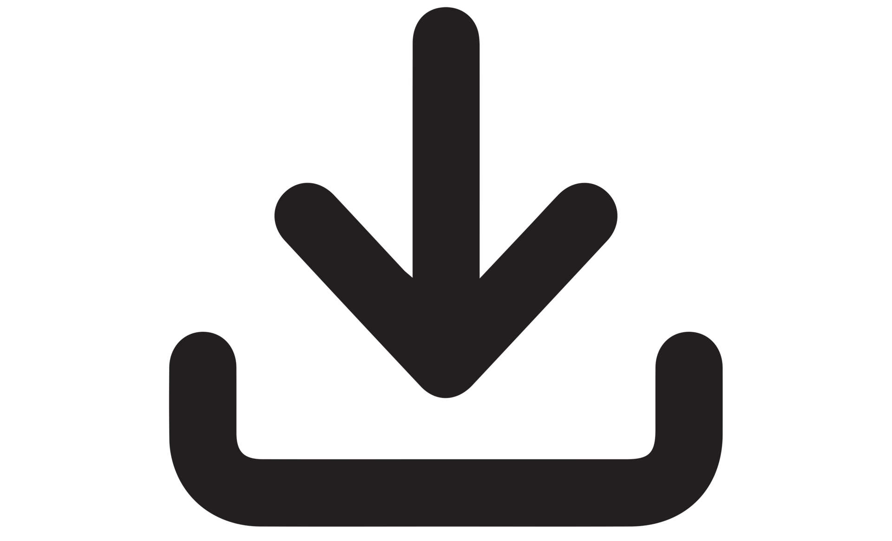

Lasercutting
- Set all line (to cut or score) to a Stroke width of 0.01pt.
- The Trotec driver read lines of this width as lines to cut or score. Lines larger that this width are usually rastered rather than cut.
- Set lines to be cut to have a stroke colour of "Red" (255, 0, 0).
- Set lined to be "linear engraved" to "Blue" (0, 0, 255).
- Set shapes to be rastered to have fill a "Black" (0, 0, 0).
Here's a template:

3D Printing